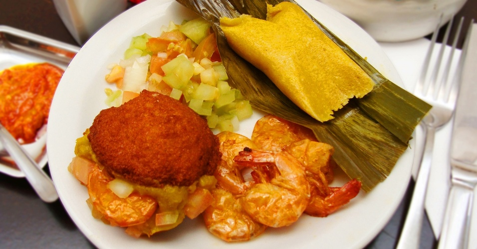

Petisco de Acarajé

O acarajé é um dos pratos mais aclamados dos baianos. Este petisco é tradicional
da Bahia e, apesar de poder ser saboreado em qualquer lugar do mundo, nenhum será
tão autêntico quanto aquele preparado pelas baianas tradicionais. Esse petisco é
ideal para entradas, além de ser uma ótima pedida para o verão.
Prato para duas pessoas.
R$ 30,00
Retornar para Cardápio